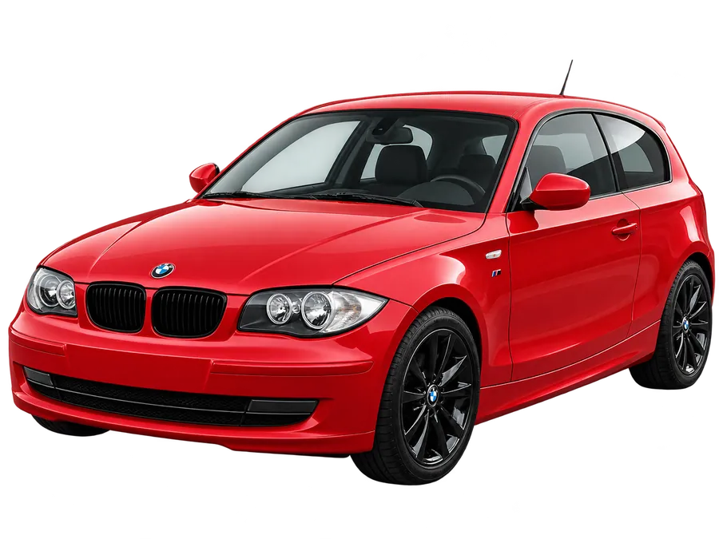

BMW
1 Series (E81 / E82 / E87 / E88)
2004 – 2013Hatchback / Coupé / Convertible
Premium compact BMW range

Stage 1 power and torque for each engine. Contact us with your VIN to confirm the options for your car.
Petrol
| Engine | Stock | Stage 1 |
|---|---|---|
| 116i 1.6 · E81 | 122 hp | On request |
| 116i 2.0 · E81 / E87 | 122 hp / 185 Nm | 155 hp / 210 Nm |
| 118i · E87 | 129 hp / 180 Nm | 145 hp / 200 Nm |
| 118i · E81 | 143 hp / 190 Nm | 155 hp / 210 Nm |
| 120i · E87 | 150 hp / 200 Nm | 166 hp / 220 Nm |
| 120i · E81 | 156 hp | On request |
| 120i · E81 | 170 hp / 210 Nm | 180 hp / 225 Nm |
| 125i 3.0 · E81 / E87 | 218 hp / 250 Nm | 263 hp / 322 Nm |
| 128i · E81 / E87 | 230 hp / 271 Nm | 265 hp / 322 Nm |
| 130i · E81 / E87 | 258 hp / 300 Nm | 270 hp / 322 Nm |
| 130i · E81 / E87 | 265 hp / 315 Nm | 275 hp / 335 Nm |
| 135i N55 · E81 / E87* | 306 hp / 400 Nm | 350 hp / 530 Nm |
| 1M Coupé · E82 | 340 hp / 450 Nm | 380 hp / 570 Nm |
Available options:
Diesel
| Engine | Stock | Stage 1 |
|---|---|---|
| 116d 2.0 · E81 / E87 | 115 hp / 260 Nm | 180 hp / 400 Nm |
| 118d · E81 / E87 | 143 hp / 300 Nm | 180 hp / 400 Nm |
| 120d · E81 / E87 | 163 hp / 340 Nm | 200 hp / 420 Nm |
| 120d · E81 / E87 | 177 hp / 350 Nm | 210 hp / 430 Nm |
| 120d · E81 / E87 | 197 hp / 390 Nm | 210 hp / 420 Nm |
| 123d · E81 / E87 | 204 hp / 400 Nm | 260 hp / 480 Nm |
Available options:
*The source listings contain some engine-to-body inconsistencies. Confirm actual engine availability by VIN. Some petrol entries may represent E85-specific calibration rather than conventional petrol Stage 1; results are indicative, not guaranteed.
Reference figures: Dynaparts E81, E82 Coupé and E87. Vehicle condition, software, fuel and dyno method affect real results.